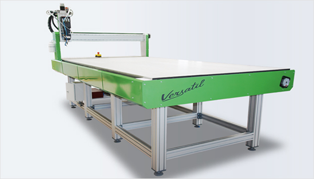
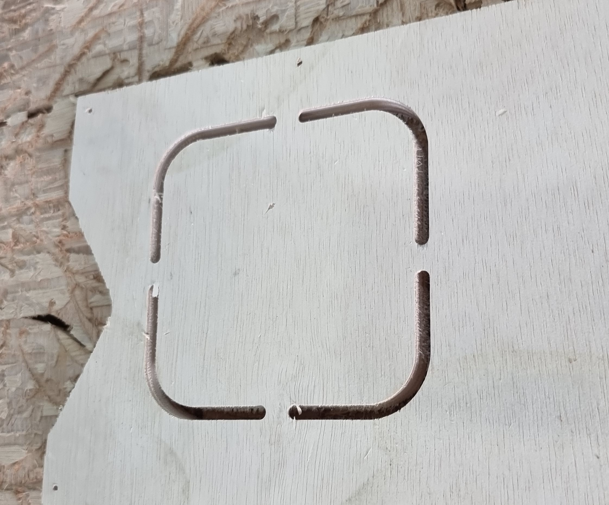
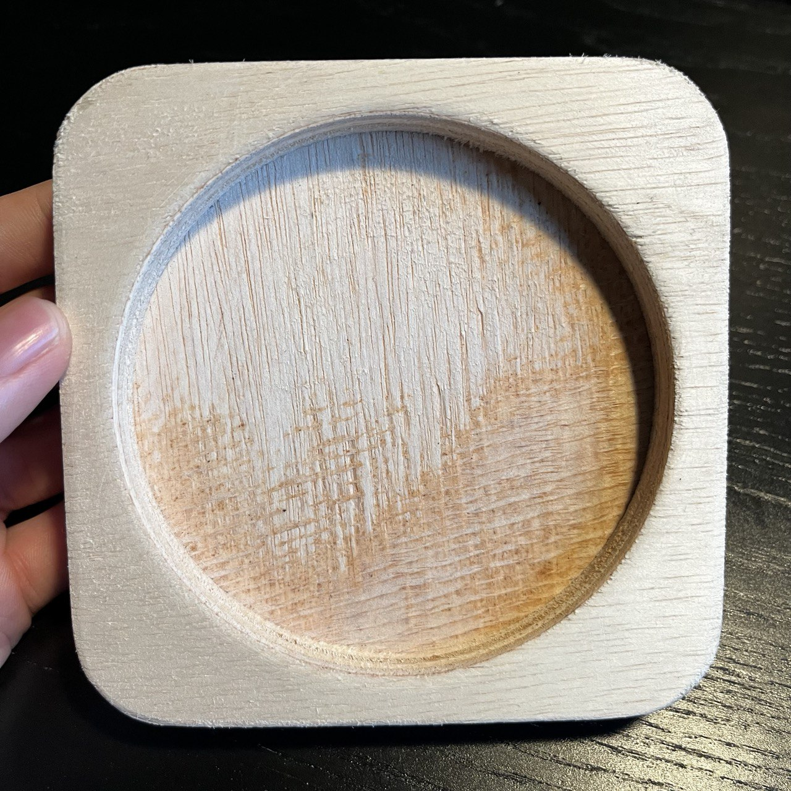
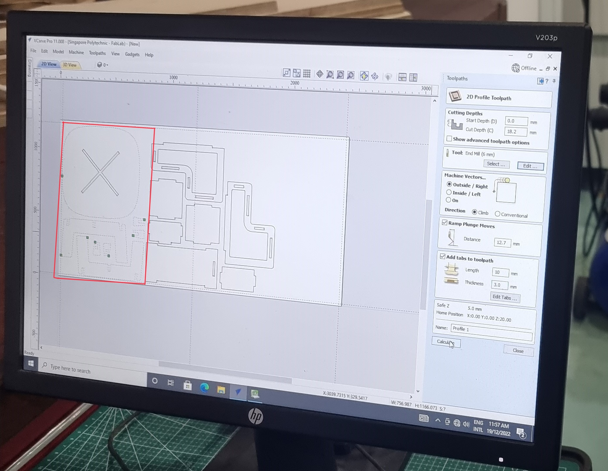
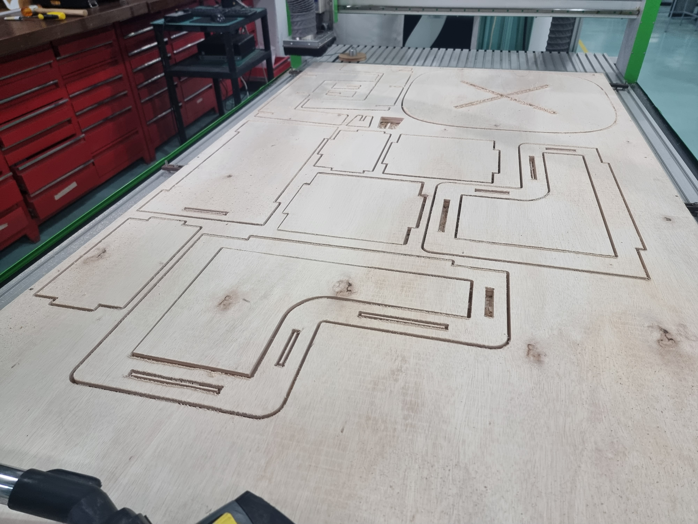
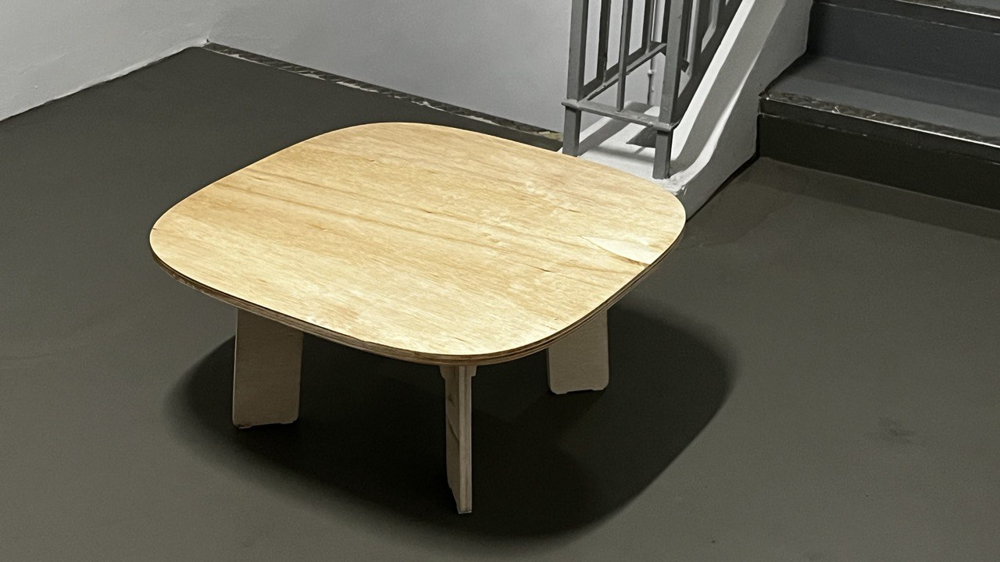

What is computer controlled machining?
Numerical control (also computer numerical control, and commonly called CNC) is the automated control of machining tools (such as drills, lathes, mills, grinders, routers and 3D printers) by means of a computer. A CNC machine processes a piece of material (metal, plastic, wood, ceramic, or composite) to meet specifications by following coded programmed instructions and without a manual operator directly controlling the machining operation. A CNC machine is a motorized maneuverable tool and often a motorized maneuverable platform, which are both controlled by a computer, according to specific input instructions. Instructions are delivered to a CNC machine in the form of a sequential program of machine control instructions such as G-code and M-code, and then executed. The program can be written by a person or, far more often, generated by graphical computer-aided design (CAD) or computer-aided manufacturing (CAM) software.
Assignments
- Document speeds & feeds calculation, recommended speeds/feeds for plywood, recommended kerf for machining.
- Make (design & mill & assemble) something big (at least 600mm in one dimension), documenting your design process, generating the cam toolpath, machining and assembly process.
Competency test
We were tasked to cut out a coaster to learn how to safely operate the CNC machine. We will start by importing the file into VCarve Pro and then adding the correct toolpaths process (pocket & profile). Remember to add tabs when cutting through the material.
 |
 |
Save the file before proceeding to set up the zero points. When we are satisifed with the positioning, we can get some ear protection and begin cutting. After the machine has completed cutting, we will use a vaccum cleaner to clean up the area before taking a chisel to hammer away the tabs. We will finish off by sanding the surfaces of the coaster to remove the excess burr.
|  |  |
For my assignment, I designed a flat pack table with the help of this guide. The parameters set by our lecturer is that we needed a dimension that was at least 600mm and for the entire parts to cut within a 1200mm x 1200mm stock.
We will start by importing our dxf files into VCarve Pro. From there we will add dogbones and tabs into the design.
My design is the one in the red box.
From here, just like we learned from making the competency test, we will chisel away the tab and sand away the excess burr. After I brought the table home, I layered it with polyurethane to help provide it some water and wear resistance.
